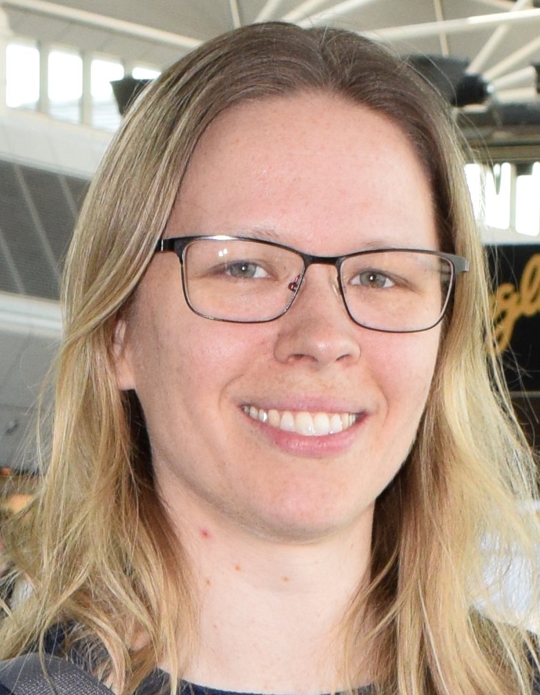
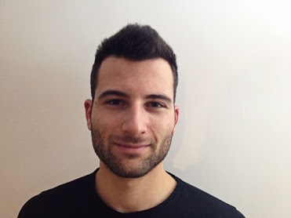
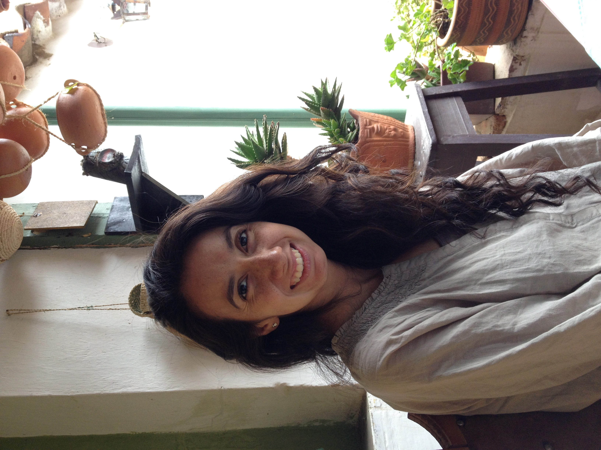
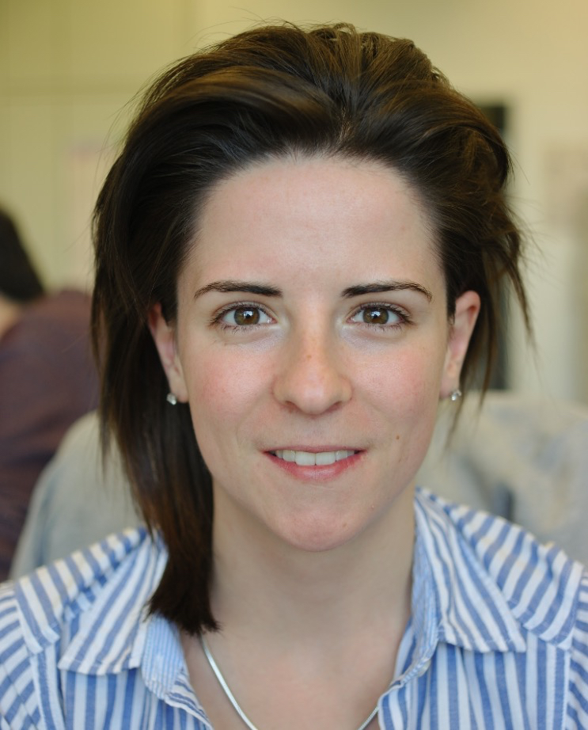

| Mark Robinson | |
| Text text text text text text text text text text text text text text text text text text text text text text text text text text text | |
|
More text (e.g. qualifications) More text |

|
Helen Lindsay |
| Text text text text text text text text text text text text text text text text text text text text text text text text text text text | |
|
More text (e.g. qualifications) More text |
|  | Charlotte Soneson |
|
Website Twitter @CSoneson GitHub csoneson Google Scholar |
|
| As a postdoctoral research associate, one of my main interests is the development and improvement of statistical methods and workflows, currently mainly in the field of RNA-seq. I am also interested in the process of evaluating and comparing methods in an objective, robust and reproducible manner. | |
|
PhD in Mathematics (2011), Lund University MSc in Engineering Physics (2005), Lund University |
|  | Simone Tiberi |
| I am a postdoctoral research associate working on the development of cutting-edge statistical methods for RNA-seq data. In particular, I am currently focusing on a Bayesian hierarchical model to detect genes showing differential transcript usage (DTU); the method accounts for the subject-to-subject variability in the transcripts proportions and for the uncertainty in the allocation of each fragment to the corresponding transcript, which is treated as a latent variable. In general terms, my interests are quite broad and lie in the development of statistical methods for applications in the medical and biological fields. | |
|
PhD in Statistics (2017), The University of Warwick MSc in Statistics (2012), The University of Padua BSc in Statistics (2010), Sapienza University of Rome |
| Izaskun Mallona | |
|
Website Google Scholar |
|
| I am mainly interested in gene expression modulation, as it lays the ground for any cell fate. The questions which excite my curiosity the most are: How are gene expression programs coded? and maintained? how do they adapt during development? and disease? To mine the presumable genome-wide metastructure I’m fond of integrating gene expression and epigenomic data, and to develop methods to do so. | |
| PhD Technical University of Cartagena 2012, MSc Biology University of Murcia 2007, BSc Computer Eng Open University of Catalonia 2014 |
| Lukas Weber | |
|
Website Twitter @lmwebr GitHub lmweber Google Scholar |
|
| I am a PhD student in biostatistics, working on the development of statistical and computational methods for analysis of various types of high-throughput biological data. The main focus of my project is on methods for differential discovery in high-dimensional single-cell flow and mass cytometry data. These methods are now available in the diffcyt R package from Bioconductor. I also enjoy teaching, especially R programming and data analysis skills as an instructor for Software and Data Carpentry. | |
| MSc in Statistics (2014), ETH Zurich |
| Katharina Hembach | |
| I have a background in bioinformatics and I am a shared PhD student with the Polymenidou lab. They focus on understanding the molecular mechanisms of neurodegenerative diseases such as Amyotrophic Lateral Sclerosis (ALS) and Frontotemporal Lobar Degeneration (FTLD). I help with the analysis and interpretation of different sequencing data, such as RNA-seq, CLIP-seq, and iCLIP. My main project is the development of a pipeline for the identification and quantification of alternative splicing events, specifically microexons and cryptic exons, from RNA-seq data. | |
| BSc and MSc in Bioinformatics, LMU and TU Munich |
| Stephan Schmeing | |
| As a PhD student coming from a particle physics background I am currently working on a more realistic Illumina sequence simulator called ReSequencer. It is able to create a profile from a bam file that is then used to simulated paired-read fastq files. Furthermore I will work on an assembly and population genomics of the Indo-Pacific bottlenose dolphin (tursiops aduncus). | |
|
MSc in Astro, Particle and Nuclear physis (2014), TU Munich BSc in Physics (2011), TU Munich |
| Ruizhu Huang | |
| My major research interest is in the development and application of statistical methods in biological data. Currently, I am working on the project about tree signal aggregation. | |
|
MSc in Biostatistics (2015), University of Zurich BSc in Applied Chemsitry (2010), Wuhan University |
| Vladimir Barbosa C. de Souza | |
| I am a PhD candidate in Bioinformatics, and I am working with PacBio data (third-generation sequencing). As there is just few documentation about the data, one of the focus of my research is to figure out their features, mainly about quality scores. At the moment I am working on a project to develop a new fast and accurate method to create CCS reads (circular consensus sequences). | |
|
MSc in Applied Statistics (2015), University of Vicosa BSc in Biology, specialization Genetics (2013), University of Vicosa |
|  | Stephany Orjuela |
| I have a shared PhD position with the Marra lab, which focuses on studying the molecular mechanisms underlying the development and progression of Colorectal Cancer. Most of my work focuses on analyzing and developing methods to process methylation data obtained from BS-seq, although I also work with RNA-seq. I am currently developing a method to identify allele specific methylation. I am also in the early stages of developing a method to integrate RNA-seq and BS-seq data. | |
|
MSc in Biology (2017), University of Zurich BSc in Biology (2015), Universidad Nacional de Colombia |

|
Stefan Milosavljevic |
| I am a PhD student with a background in biology and bioinformatics. I am currently working on the rapid evolution of a plant species called Arabidopsis kamchatica. My project focuses on epigenetic modifications over short timescales and my general aim is to assess the impact and the importance of DNA methylation in evolution over short periods (rapid evolution). | |
|
MSc in Computational Biology and Bioinformatics (2015), ETH Zurich and University of Zurich BSc in Biology (2013), Université de Lausanne |
|  | Helena Lucia Crowell |
| In collaboration with the Bodenmiller lab lab, I have worked on correcting for spillover in CyTOF data. The preprint to this project is available on bioRxiv and is awaiting publication. Alongside our compensation approach, I have made Finck et al.’s bead-based normalization and Zunder et al.’s single-cell deconvolution available in CATALYST (Cytometry dATa anALYSis Tools): a Bioconductor package providing tools for preprocessing and analysis of cytometry data. Currently, I am working on integrating M. Nowicka’s CyTOF workflow for differential analysis into CATALYST. My Masters thesis project is predicated on the benchmarking of (non-)branching trajectory inference tools for scRNA-seq and cytometry data. | |
|
MSc in Computational Biology & Bioinformatics (present), ETH Zurich BSc in Biochemistry (2015), University of Heidelberg |
| Angelo Duo | |
| Text here | |
| More text here |